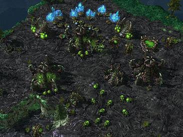
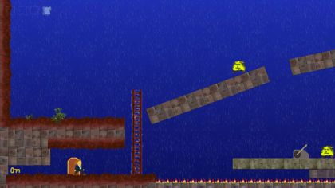
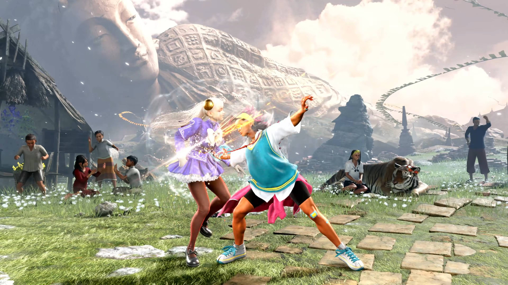
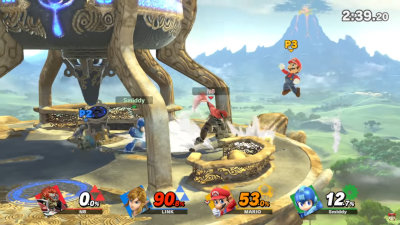
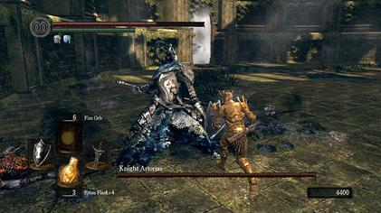

ผู้สอน: คณาจารย์ประจำหลักสูตรเกมและสื่ออินเทอร์แอคทีฟ (GI) คณะเทคโนโลยีสารสนเทศและนวัตกรรม | มหาวิทยาลัยกรุงเทพ
Update()
ในเกมระดับเริ่มต้น นักศึกษามักเขียนโค้ดอ่านคีย์บอร์ดลงใน Update() ของคลาสตัวละครโดยตรง:
// Direct Hardware Polling Anti-Pattern public class Player { public void Update(float dt) { if (Raylib.IsKeyDown(KeyboardKey.D)) Position.X += speed * dt; if (Raylib.IsKeyPressed(KeyboardKey.Space) && isGrounded) Velocity.Y = -jumpForce; } }

"Encapsulate a request as an object, thereby letting you parameterize clients with different requests, queue or log requests, and support undoable operations." — Gang of Four (Design Patterns: Elements of Reusable Object-Oriented Software)
Position
Velocity
ICommand
Execute(Receiver)
MoveCommand
JumpCommand
IPlatformerCharacter
MarioPlayer
GhostRunner
Execute()
InputHandler
GhostPlaybackEngine
[!NOTE] ผู้เล่นสด (MarioPlayer) และร่างเงา (GhostRunner) ต่างเป็น Receiver ที่ใช้อินเทอร์เฟซเดียวกัน ทำให้คำสั่งชุดเดียวกันสามารถนำไปรันซ้ำกับตัวละครใดก็ได้แบบ Polymorphic!

การนำ Command Pattern ไปใช้งานไม่ได้จำกัดแค่ระบบปุ่มกด แต่เป็นหัวใจของ:

Command Object

Undo()

Command Queue


มีสองแนวคิดหลักในการสร้างระบบ Replay ในเกม 2D:


namespace Game_CommandPattern_Completed.Core.Characters; /// <summary> /// สัญญาสำหรับตัวละคร Platformer (Receiver ใน Command Pattern) /// </summary> public interface IPlatformerCharacter { string Name { get; } Vector2 Position { get; set; } Vector2 Velocity { get; set; } bool IsGrounded { get; set; } int FacingDirection { get; set; } bool IsRunning { get; } bool IsJumping { get; } void Move(float directionX); void Jump(); void Stop(); void Reset(Vector2 startPos); }
public class MoveCommand : ICommand { public float DirectionX { get; } public MoveCommand(float directionX) => DirectionX = directionX; public void Execute(IPlatformerCharacter target) { if (DirectionX != 0f) target.Move(DirectionX); else target.Stop(); } public override string ToString() => $"Move({DirectionX:F1})"; } public class JumpCommand : ICommand { public void Execute(IPlatformerCharacter target) { target.Jump(); } public override string ToString() => "Jump()"; }
public class InputHandler { private float _lastDirectionX = 0f; public ICommand? CheckHorizontalMovement() { float dir = 0f; if (Raylib.IsKeyDown(KeyboardKey.D) || Raylib.IsKeyDown(KeyboardKey.Right)) dir += 1f; if (Raylib.IsKeyDown(KeyboardKey.A) || Raylib.IsKeyDown(KeyboardKey.Left)) dir -= 1f; // บันทึกเฉพาะเมื่อมีการเปลี่ยนทิศทาง (Event-Driven Input Stream) if (dir != _lastDirectionX) { _lastDirectionX = dir; return new MoveCommand(dir); } return null; } public ICommand? CheckJump() { if (Raylib.IsKeyPressed(KeyboardKey.Space) || Raylib.IsKeyPressed(KeyboardKey.W)) return new JumpCommand(); return null; } }
public readonly record struct TimedCommand(float Timestamp, ICommand Command); public class CommandRecorder { private readonly List<TimedCommand> _tape = new(256); public bool IsRecording { get; private set; } public void StartRecording() { _tape.Clear(); IsRecording = true; } public void Record(float timestamp, ICommand command) { if (IsRecording) _tape.Add(new TimedCommand(timestamp, command)); } public void StopRecording() => IsRecording = false; public List<TimedCommand> GetTapeCopy() => new(_tape); }
public class GhostPlaybackEngine { private readonly List<TimedCommand> _ghostTape = new(256); private int _playbackIndex = 0; public void Update(float currentLevelTime, GhostRunner ghost) { if (!IsActive || !ghost.IsActive) return; // ประมวลผลคำสั่งทั้งหมดที่ถึงเวลา Execute ณ เสี้ยววินาทีนี้ while (_playbackIndex < _ghostTape.Count && currentLevelTime >= _ghostTape[_playbackIndex].Timestamp) { _ghostTape[_playbackIndex].Command.Execute(ghost); _playbackIndex++; } } }
_levelTimer
Raylib.DrawTexturePro(texture, srcRec, destRec, Vector2.Zero, 0f, new Color(130, 215, 255, 140));
DashCommand
SlideCommand
implements ICommand
CommandRecorder
ต่อไปในสัปดาห์ที่ 9: Component Pattern & Entity-Component Architecture: การทลายข้อจำกัดของ Monolithic Class สู่ระบบเกมที่ประกอบร่างได้อย่างอิสระ
Bangkok University | Games & Interactive Media